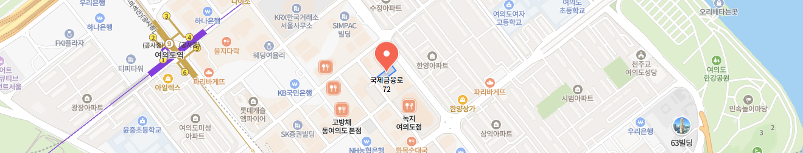

VISIT GUIDE
진료시간과 오시는 길
진료 전 필요한 정보를 한곳에서 확인하실 수 있습니다.

진료시간
- 월 화 목 금
- 09:00 ~ 20:00야간진료
- 수요일
- 09:00 ~ 19:00
- 토요일
- 09:00 ~ 14:00단축진료
- 점심시간
- 13:30 ~ 14:30
- 진료 종료 30분 전 접수 마감입니다.
- 일요일 · 일반 공휴일 휴진입니다.
- 토요일 점심시간 없이 진료합니다.
오시는길
KB국민은행 동여의도점 건물 4층
서울특별시 영등포구 국제금융로 72, 호정빌딩 4층
지하철 이용 시샛강역 1번 출구, 도보 7분
버스 이용 시하나은행여의도지점 정류장
일반 261번, 7611번
본원 건물 내 주차 이용 가능